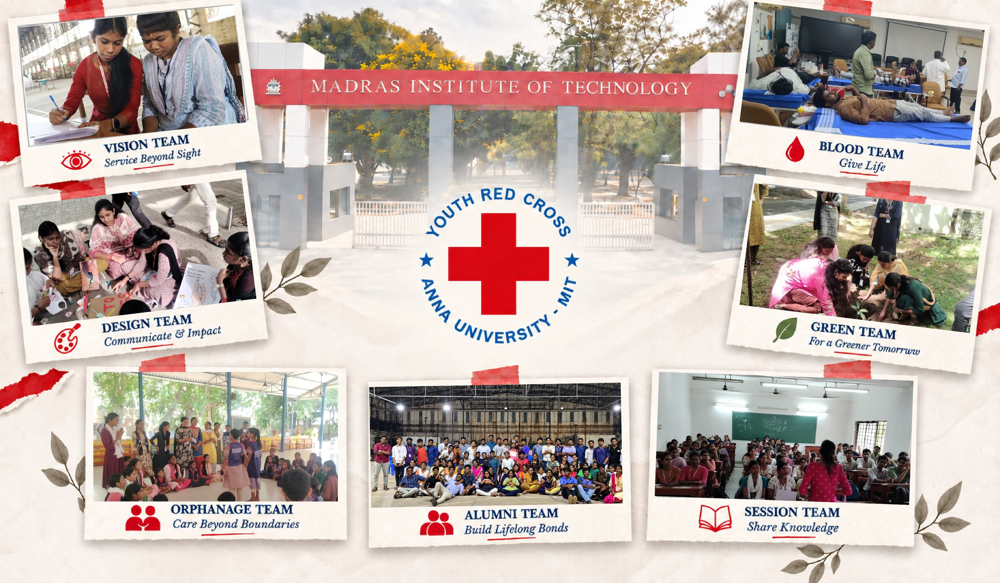
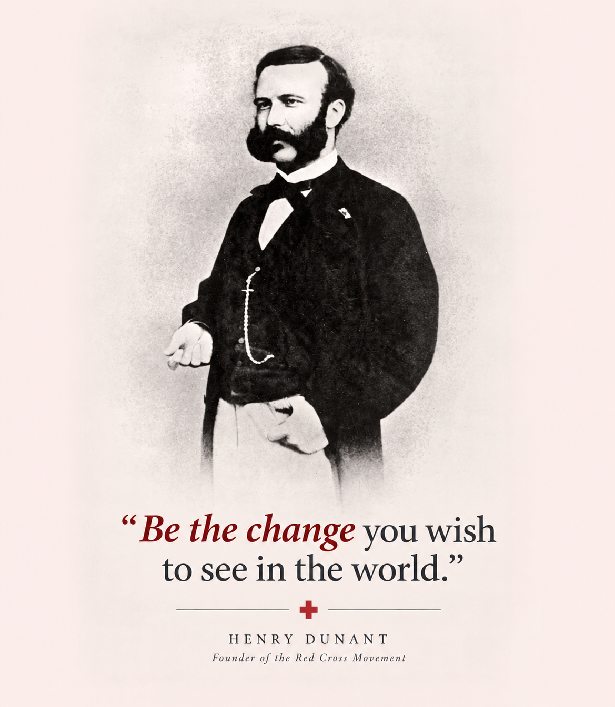

Activity highlights
Making service a part
of student life.
PLANTATION
VISION
COMPANIONS
BLOOD
DONATION
AWARENESS
PROGRAM
RALLY
ORPHANAGE
VISIT
About YRC MIT
YOUTH RED CROSS
MIT CAMPUS
The Youth Red Cross (YRC) is a student-driven organization united by the principle "Together in Service • United by Humanity" to promote health, service, and friendship. Members drive impactful initiatives including blood donation, scribe support for visually impaired students, orphanage visits, and environmental drives. YRC also empowers volunteers through leadership camps and inclusive events like Youthfest-"Be a Volunteer. Be the Change."

Vision
With a strong commitment to its core principles, the YRC envisions itself as a beacon of empathy, hope, and solidarity, bringing positive change to both the institute and the wider society. Promotion of health and life. Service to the sick and the suffering. Promotion of national and international friendship to develop the mental and moral capacities of the youth
Mission
Our mission is to empower youth through purposeful volunteering and community service, addressing needs in health, education, environmental sustainability, and social welfare. We strive to cultivate compassion, leadership, and social responsibility, enabling students to contribute meaningfully to society and create lasting positive change
Objectives
Our objectives are to promote health and well-being, strengthen voluntary blood donation, support inclusive education, and encourage environmental sustainability. We strive to extend meaningful support to vulnerable communities through outreach and social service initiatives, while fostering leadership, empathy, and a strong sense of social responsibility among student volunteers.
Impact
Through our community initiatives, outreach programmes, and annual camps, we turn volunteering into meaningful action. We create positive change through health awareness, environmental activities, social service, and community engagement. Our volunteers grow through leadership, teamwork, empathy, and service —“Be a Volunteer. Be the Change.”
Our teams
Many strengths One purpose.
Every team brings a distinct way to turn care into action.
Blood Team
Driven to save, built to serve.
Vision Team
Be Someone's Vision Today.
Session And Orphanage Team
Where Ideas Meet Action.
Design and Social Media Team
Visualizing ideas, shaping experiences
Green Team
Sow Green, Grow Humanity.
Alumni Team
United By Service, Bound By Memories.